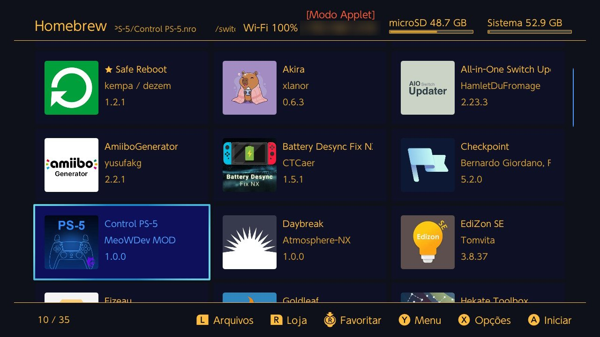
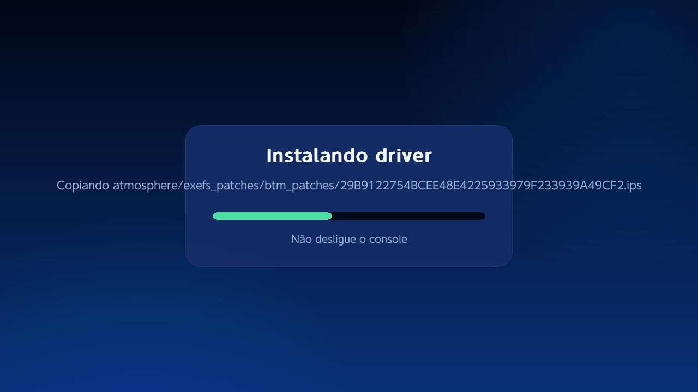
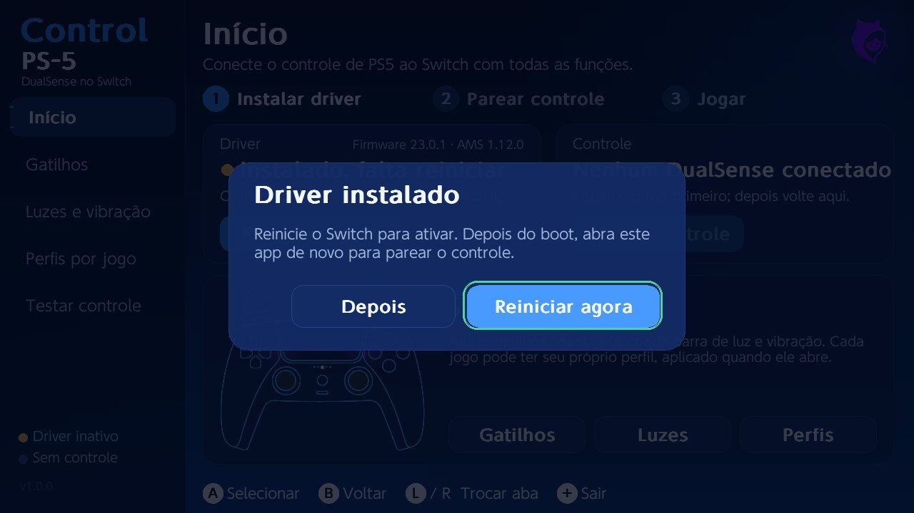
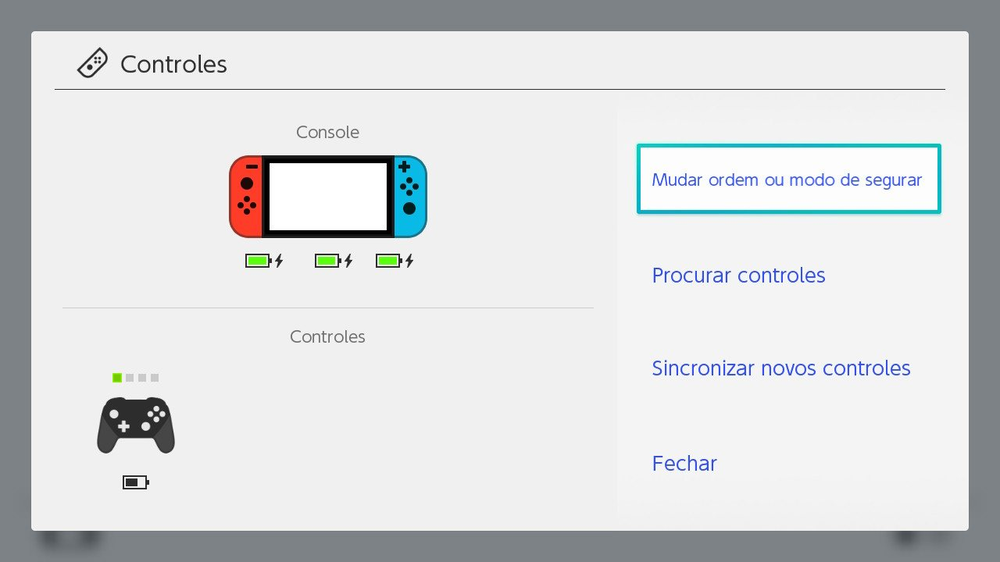
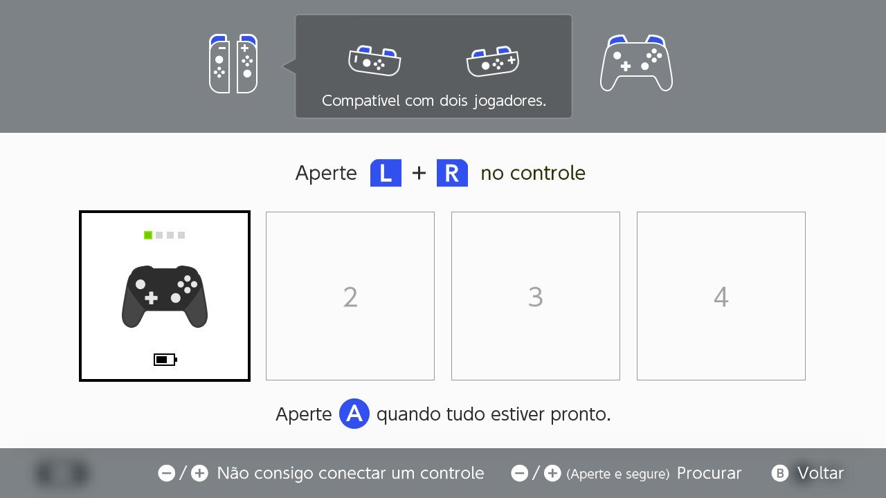
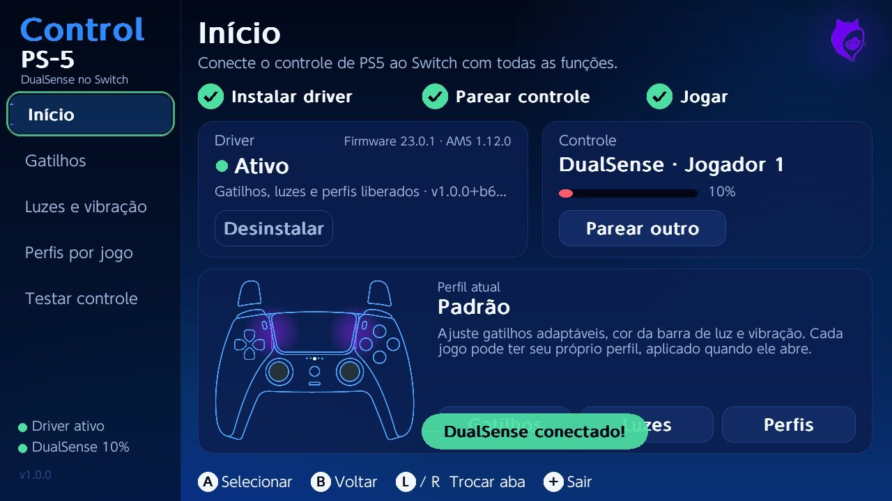

O que o app faz pelo seu controle
Tudo é configurado dentro do Switch, sem mover pastas e sem editar arquivo.
Gatilhos adaptáveis em L2 e R2
Resistência, clique de arma, arco, vibração e metralhadora. Cada gatilho tem predefinições prontas e ajuste fino de início, fim e força.
Barra de luz e LEDs
Doze cores rápidas, ajuste fino, brilho, LED do botão mute e LEDs de jogador. A prévia aparece no controle na hora.
Perfil automático por jogo
Configure o Mario Kart uma vez. Quando o jogo abre, o perfil dele é aplicado sozinho; os outros usam o padrão.
Instalação em um toque
O app instala, atualiza e desinstala o driver, e guarda um backup do MissionControl que você já tinha.
Pareamento guiado
Mostra o passo a passo no desenho do controle e abre a tela Controles do Switch para você parear outro.
Teste do controle novo
Botões, analógicos, giroscópio, bateria e touchpad ao vivo, para ver se está tudo certo antes de jogar.
Touchpad no sistema experimental
Como tela de toque, como mouse ou como cursor com mãozinha. Funciona dentro do app; no sistema depende do firmware e do jogo.
Como fica no Switch
Telas reais do app, capturadas no console.
Como instalar
São duas etapas: levar o app para o cartão SD e, dentro do Switch, instalar o driver e parear o controle. Antes, faça uma cópia da pasta atmosphere/contents/010000000000bd00 do cartão, por segurança.
Levar o app para o cartão SD
- No pacote CNX, segure R e abra o Álbum para entrar no menu Homebrew.
- Abra o aplicativo DBI e inicie a conexão MTP.
- Conecte o cabo USB do Switch ao computador.
- No computador, abra o dispositivo chamado Switch, entre em 1: SD Card e depois na pasta switch. O caminho fica
Este Computador\Switch\1: SD Card\switch. - Copie para lá a pasta já descompactada Control PS-5.
- Saia do DBI e volte ao menu Homebrew do mesmo jeito (R + Álbum). O Control PS-5 aparece na lista: abra-o.

O Control PS-5 na lista do Homebrew.
Prefere sem cabo? Tire o cartão SD, coloque a pasta Control PS-5 dentro de switch no computador e devolva o cartão ao Switch.
Instalar o driver e parear
- Na tela Início, toque no botão azul Instalar. Quando terminar, o app pede para reiniciar o Switch.


Instalando o driver e o aviso para reiniciar. - Com o Switch ligado de novo, abra o Control PS-5 outra vez.
- Toque em Parear controle e, na tela Controles que abrir, escolha Mudar ordem ou modo de segurar.

A tela Controles do Switch. - No controle, segure Create e PS até as barras de luz começarem a piscar.
- Na tela "Aperte L + R no controle", aperte L1 e R1 juntos. Quando sincronizar, um controle preto aparece na tela e as barras de luz ficam acesas, sem piscar.

Controle sincronizado como jogador 1. - Volte ao app e configure gatilhos, luzes e perfis do jeito que quiser.

Driver ativo e DualSense conectado.
Antes de instalar
Compatibilidade
- Switch com Atmosphère (pacote CNX).
- Testado no firmware 23.0.1 com Atmosphère 1.12.0.
- DualSense e DualSense Edge.
Limites
- O som do jogo não sai pelo alto-falante do controle: o Switch não envia áudio para controles.
- Os efeitos dos gatilhos são configurados por perfil; o jogo não sabe que eles existem.
- Os modos de touchpad no sistema são experimentais.
Se algo der errado
Abra o app e toque em Desinstalar: ele restaura o MissionControl original. Se o app não abrir, apague atmosphere/contents/010000000000bd00 e cole de volta o seu backup.
Firmware novo
O app confere o firmware antes de instalar e se recusa quando ele é mais novo que o suportado, para não travar o boot do console.
Gostou? Apoie o projeto
O Control PS-5 é gratuito. Um Pix de qualquer valor ajuda a manter as atualizações quando sair firmware novo.
No app do seu banco: Pix, Pagar com chave, e cole.